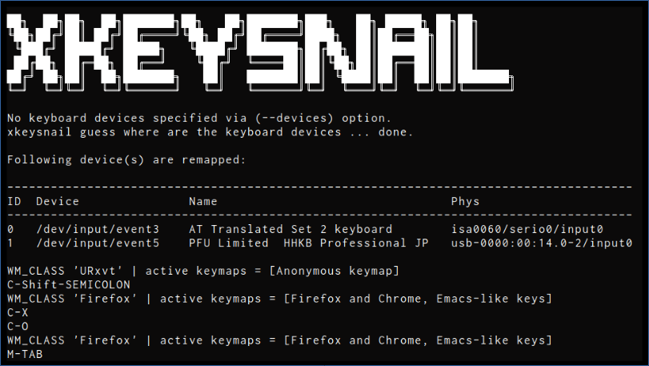
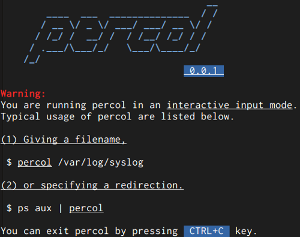
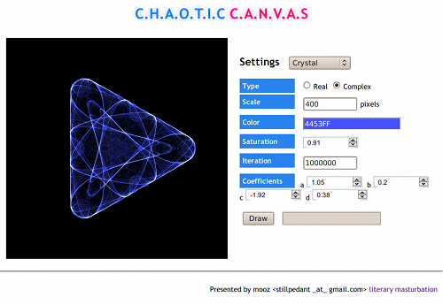
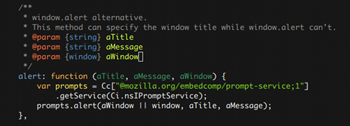

english / japanese
mooz deceives you
(eval 'mooz) ; => "pedantic geeky being"
Products
CLI/Misc Tools
xkeysnail
https://github.com/mooz/xkeysnail/
xkeysnail is yet another keyboard remapping tool for X environment. It's like xmodmap but allows more flexible remappings.
It runs in low-level layer (i.e. evdev and uinput), making remapping work in almost all the places.
It has high-level and flexible remapping mechanisms, such as
- per-application keybindings can be defined
- multiple stroke keybindings can be defined such as `Ctrl+x Ctrl+c` to `Ctrl+q`
- not only key remapping but arbitrary commands defined by Python can be bound to a key
percol
https://github.com/mooz/percol/
percol is a command line tool which adds flavor of interactive selection to the concept of traditional pipe in UNIX. percol allows you to
- Split its input by lines,
- Ask user for queries and filter inputs interactively,
- Output selected lines to the standard output.
percol runs on command lines fast, has high extensibility and treats multi-byte strings correctly.
rios
rios is a library for Ruby which mainly developed for developers of command line applications.
rios is a proxy between a command line application and a user. rios can sniff all communications include user input and application output. Moreover, rios can change those communication information. This means that by using rios, application developers can emulate user inputs and show arbitrary outputs to the user by mocking actual inputs and outputs.
rios have wide range of applications which include unit testing of command line applications and use of an alternative of "expect" command.
Node.js
org.js
https://github.com/mooz/org-js/
org.js is a yet another parser for org-mode notation written in JavaScript.
It supports most of org-js notations include table, quotation, image, definition list, special directive and so forth.
See http://mooz.github.com/org-js/editor/ for a working example.
ICU Character Set Detection for Node.js
https://github.com/mooz/node-icu-charset-detector
A simple binding of ICU character set detection for Node.js.
Add-ons for Mozilla apps
KeySnail
http://wiki.github.com/mooz/keysnail/

KeySnail is an add-on for Mozilla Firefox and Thunderbird which allows you to customize their keybindings. Initially KeySnail is developed to be the replacement of keyconfig and Firemacs. Now, KeySnail has grown up dramatically and states that KeySnail is the Vimperator for Emacs users.
Clipple
https://addons.mozilla.org/en-US/firefox/addon/58678/

Clipple is the simple clipboard manager for Mozilla Firefox which allows you to store multiple texts to the extended clipboard.
Gmail Popup Unread Manager
https://addons.mozilla.org/en-US/firefox/addon/193265/

Gmail Popup Unread Manager allows you to manage unread messages in Gmail.
JavaScript Experiments
MiSPLi
http://mooz.github.com/mispli/

MiSPLi is the Lisp implementation and REPL written in JavaScript. It has static-scoping, lexical-closure, macro, basic special forms, basic functions and so forth.
C.H.A.O.T.I.C C.A.N.V.A.S
http://mooz.github.com/chaotic/
C.H.A.O.T.I.C C.A.N.V.A.S is the chaos fractal generator written in JavaScript which uses HTML canvas.
Happy Hacking Prettifier

Happy Hacking Prettifier is a tiny syntax highlighter for javascript.
Emacs Lisp
lemon-mode.el
https://github.com/mooz/lemon-mode
A major mode for editing LEMON Parser Generator grammar files.
shadow.el
https://github.com/mooz/shadow.el/
Shadow.el is a Shadow.vim for Emacs which supports you code with a wrapper transparently in a pluggable way.
zlc.el
https://github.com/mooz/emacs-zlc/

zlc.el provides zsh like completion for minibuffer in Emacs.
js2-mode.el (forked)
https://github.com/mooz/js2-mode/

An improved JavaScript mode for GNU Emacs. Forked from http://code.google.com/p/js2-mode/.
js-doc.el
https://github.com/mooz/js-doc/
js-doc.el helps you to treat JsDoc style comment in Emacs.
Greasemonkey Script
You keyboard junky
http://userscripts.org/scripts/show/62017/

You keyboard junky add keyboard shortcuts to controller of YouTube.
Icons by Yusuke Kamiyamane.